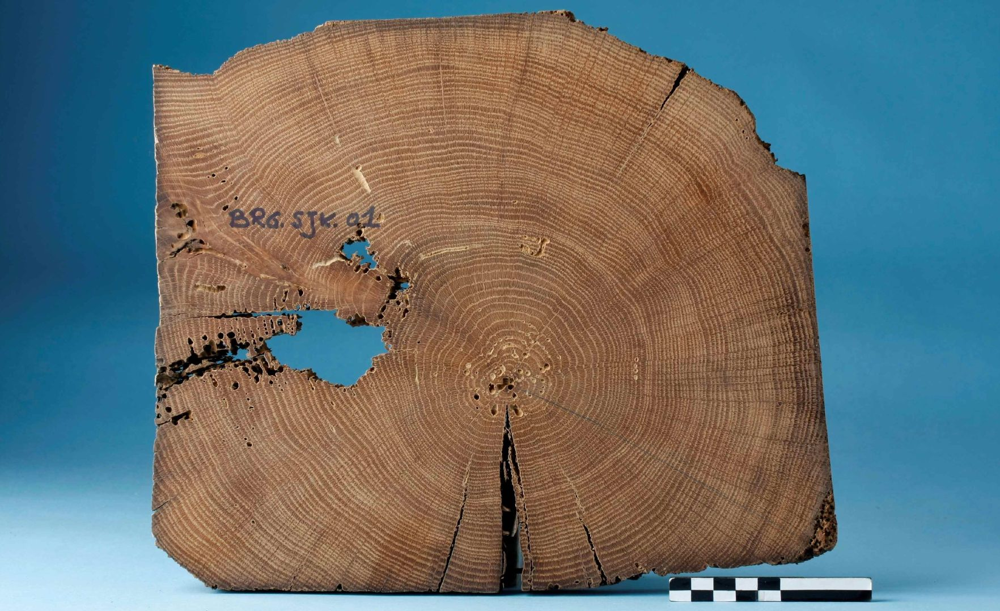

Dendrochronologie en erfgoedonderzoek
Kristof Haneca1 
– 17 maart, 2021
 © agentschap Onroerend Erfgoed
Woord vooraf
Welkom bij de online versie van Dendrochronologie en erfgoedonderzoek. Deze handleiding werd in 2017 gepubliceerd door het agentschap Onroerend Erfgoed en is als pdf te downloaden op de Open Archives Repositiry (OAR).
Met deze online versie willen we kleine aanpassingen aan de originele uitgave, veranderende inzichten en nieuwe toepassingen van dendrochronologie binnen het erfgoedonderzoek - op basis van recente wetenschappelijke ontwikkelingen - sneller ontsluiten. De basis van deze handleiding blijft de originele uitgave, maar hier kan je steeds de meest actuele versie raadplegen.
Gelieve te citeren als:
Haneca K. (2021-03-17). Dendrochronologie en erfgoedonderzoek. Handleiding agentschap Onroerend Erfgoed, Brussel [online: https://hanecakr.github.io/handleidingDendro/]
Oorspronkelijke gepubliceerd als:
Haneca K. (2017). Dendrochronologie en erfgoedonderzoek, Handleiding agentschap Onroerend Erfgoed 16, Brussel [online: https://oar.onroerenderfgoed.be/uitgave/251].
erfgoedonderzoeker, agentschap Onroerend Erfgoed, kristof.haneca@vlaanderen.be↩︎